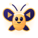
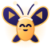
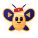
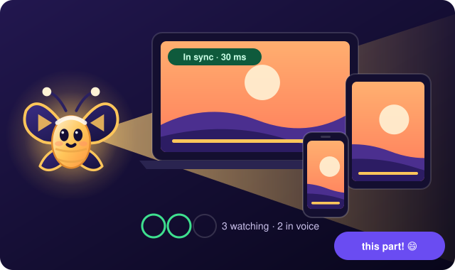
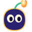
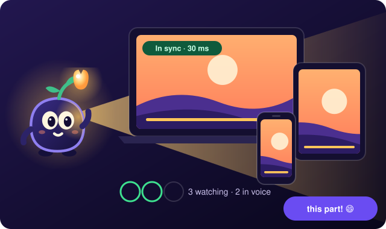
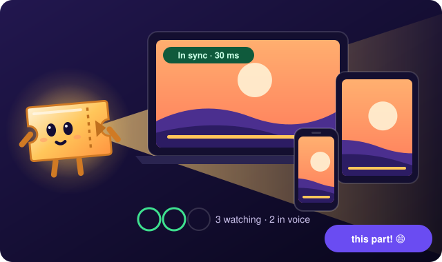

Each keeps the D1 family trait (two dark ink eyes with a top-left glint), works on dark and light themes and has its own ≤ 32 px cut. All are our own characters.
Today's Glowbeam, why it reads as weak
It is the logo's light cone turned sideways, so it repeats the logo instead of adding a character.
No limbs or posture: a pointed teardrop can't wave, sit or hold anything, so moods rest on two dots and a line.
It is all gold with no outline: on gold, sunset or light scenes its edge disappears.
The left point reads as an arrow, a pin or a fish rather than a face.
The face is small for the body, so at 32 px and below it is just a blob.
Costumes have nothing to sit on: a hat on a cone looks pasted on.
A · Lumi, the night moth
A plush moth drawn to the screen's light. Night-indigo wings with a gold rim and a play mark each; the cream-gold body carries the face.

front

happy

Sinema costumesmall cut 64 · 32 · 24 · 16beside the D1 logo
Gece (night)OkyanusNeonGünbatımılight card

B · Pip, the lamp sprout
A round night creature with a glowing bud growing from its head; the bud lights its face from the side ("side-lit", the name told as a picture).
fronthappySinema costume

small cut 64 · 32 · 24 · 16beside the D1 logo
Gece (night)OkyanusNeonGünbatımılight card

C · Stub, the ticket
A cinema ticket that came along: notched card, perforation, a play mark on its stub. Says "cinema" without any brand.
fronthappySinema costumesmall cut 64 · 32 · 24 · 16beside the D1 logo
Gece (night)OkyanusNeonGünbatımılight card

D · Glowbeam 2 (evolution)
Today's Glowbeam grown into a character: an ink outline, a light-drop body, arms, a bigger face, the beam as a soft tail behind it.
fronthappySinema costumesmall cut 64 · 32 · 24 · 16beside the D1 logo